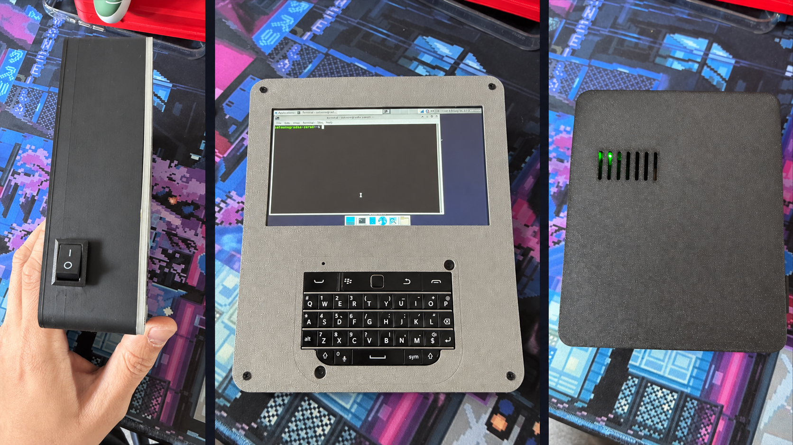

Trabalho sem amarras
Terminal, navegador, automações e ferramentas pessoais em um equipamento que cabe na mão.
Computação de verdadeSatoOne é um computador pessoal portátil com Linux, tela touch e teclado físico. Criado para quem quer produzir, desenvolver e acessar suas ferramentas sem depender de um notebook convencional.

Uma demonstração real da V0 executando Debian, respondendo ao touch e ao teclado físico. Este registro mostra a integração central funcionando antes das melhorias planejadas para autonomia, espessura e refrigeração.
Vídeo real · 17 segundos · capturado em 16 set 2026
O SatoOne combina a liberdade de um computador Linux com um formato compacto, pensado para tarefas reais e controle total do ambiente de trabalho.
Terminal, navegador, automações e ferramentas pessoais em um equipamento que cabe na mão.
Computação de verdadeUma plataforma Linux flexível para adaptar fluxos, aplicações e integrações às necessidades do usuário.
Experiência configurávelTela touch e teclado físico unidos em um formato criado para interação rápida e produtiva.
Compacto e funcionalCompartilhamos os marcos do desenvolvimento para que futuros usuários, parceiros e apoiadores acompanhem a evolução com transparência — sem promessas artificiais.
Computação, display, touchscreen, teclado, conectividade e alimentação portátil integrados e testados.
LiPo 10 Ah e UPS antigo já integrados. Próximos passos: corrigir a inicialização do aplicativo, medir autonomia, reduzir o Back e validar a térmica.
Revisão mecânica, acabamento, montagem, confiabilidade e preparação de uma pequena série de validação.
Validar interesse, formato comercial, suporte, fornecedores e viabilidade de produção antes do lançamento.
Cada etapa é acompanhada por testes de funcionamento, desempenho, temperatura, conectividade e estabilidade.
LiPo 10 Ah integrada ao UPS antigo sem suporte 18650: cerca de 4,92 V estáveis sob carga completa, conforme teste físico relatado. IP5310 permanece experimental. O health check apontou falha de inicialização do aplicativo e atenção térmica; as correções estão pendentes.
Entre em contato para registrar seu interesse na versão final e receber as futuras atualizações do projeto: health checks, notícias, bastidores e novos vídeos até o lançamento.
Contato direto: sattoumarcelo@gmail.com
O canal de atualizações e o acesso antecipado ainda estão em preparação. Manifestar interesse não constitui reserva, compra ou garantia de disponibilidade. Preço e formas de pagamento: em breve.